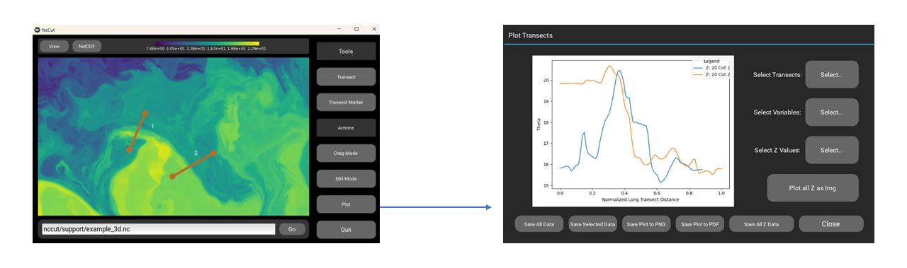
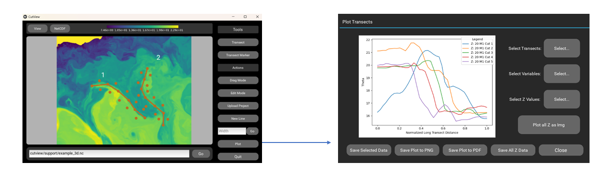

Usage
To install the app refer to the Installation instructions.
To run the app execute the following Python code:
from cutview.cutview import CutView CutView().run()
For video walkthroughs of CutView’s basic usage, refer to the Tutorial Videos section.
Loading a File
CutView supports .jpg, .jpeg, and .png image files and NetCDF .nc files. To load the file you must either know the absolute path to your file on your system or move the files into the same directory as your code. In this case you can use the relative file path.
To load an image or NetCDF file type the absolute or relative file path to your file in the file entry text box
If you are loading a NetCDF file a popup window will appear with additional selections:
Select which variable from your file you would like to see.
Confirm or select which dimensions you would like to use as the X and Y axes for your variable.
If your variable has data in a third dimension select the Z dimension and an initial Z value to display. You will be able to toggle between z values later.
Select Go to load the selected data
You can scroll to zoom in and out of the image and can click and drag the image to move it around.
From the View menu in the settings bar you can rotate or flip the image as well as change graphic settings for the tools.
If you are loading a NetCDF file, from the NetCDF menu in the settings bar you can change which variable or z value you’d like to see as well as change the color map or contrast of the image.
Changing the contrast and colormap only affects the displayed image. Transect data is taken from the dataset itself.
Tools
CutView has two types of tools for making transects. The simpler Transect tool allows you to individually draw lines across features where transects will be taken when plotted:

The Transect Marker tool allows you to draw a line along a feature, and transects will be automatically made orthogonal to the line you’ve drawn with a set width:

Transect Tool
Hit the Transect button to enter transect mode
Click two points you’d like to make a transect between
Select Drag Mode from the actions sidebar to drag the image without selecting points, and select Transect Mode to go back.
Select Edit Mode to delete either the last point clicked or the last transect drawn.
Repeat for as many transects as you’d like
When done select the Plot button and a popup will appear with a plot of all transects and downloading options.
You can select which transects you’d like to plot
If using a NetCDF file you can select multiple variables and Z values you’d like to see your selected transects plotted from.
If using a NetCDF file with a Z dimension you can plot an image of a single transect taken over all Z values of your dataset. To use this option only one transect can be selected.
You can save the current plot to .PNG or .PDF formats. You can also save the currently selected data or the currently selected data over all Z variables to a JSON file (see the Data Output section for more on how data is formatted).
Click anywhere around the popup or the close button to dismiss plotting window.
Transect Marker
Using this tool multiple lines or Markers can be drawn onto a loaded file. These Markers can all be saved together as a project and reloaded into the viewer later. When a large file is being explored this allows you to mark out features over multiple sessions.
Hit the Transect Marker button to enter transect mode.
Click points along the feature you’d like to make transects across. Dots will appear on either side of the line drawn indicating the start and end points of the transects that will be made.
Select Drag Mode from the actions sidebar to drag the image without selecting points, and select Transect Mode to go back.
Select Edit Mode to delete either the last point clicked or the last marker drawn.
To change the width of the transects being made you may enter the number of pixels into the Width text box. Select Go to change the width for all future transects.
This will not change the width of transects already drawn
The default width is 40 pixels, you can enter any width within 0 and 400
If you change the width of a marker any new markers will continue to use that same width unless you change it again.
Select New Line to begin a new marker and repeat for as many markers as you’d like.
When done select the Plot button and a popup will appear with a plot of all transects from the first marker and downloading options.
You can select which transects from which markers you’d like to plot
If using a NetCDF file you can select which variables and Z values you’d like to see your selected transects plotted from.
If using a NetCDF file with a Z dimension you can plot an image of a single transect taken over all Z values of your dataset.
You can save the current plot to .PNG or .PDF formats. You can also save the currently selected data or the currently selected data over all Z variables to a JSON file (see the Data Output section of this wiki for more on how data is formatted).
If you want to continue working on your project at a later time, select all the transects and save the data to JSON format. Refer to section below for reloading that data.
Click anywhere around the popup or the close button to dismiss
To upload a previously worked on project:
Load the same dataset/image you worked on previously.
Hit the Transect Marker button to enter transect mode.
Instead of clicking new points, select the Upload Project button.
Enter the file name of the transect data you saved previously and select Ok.
All markers from the file will load onto the viewer and you can continue working on the project.